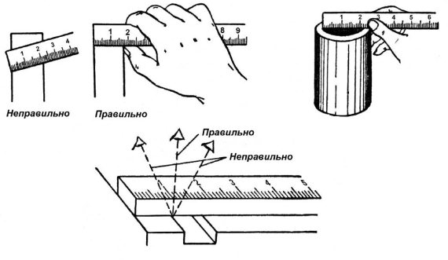
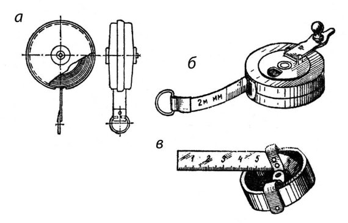
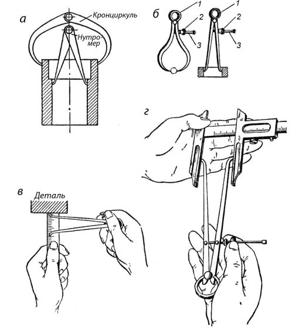
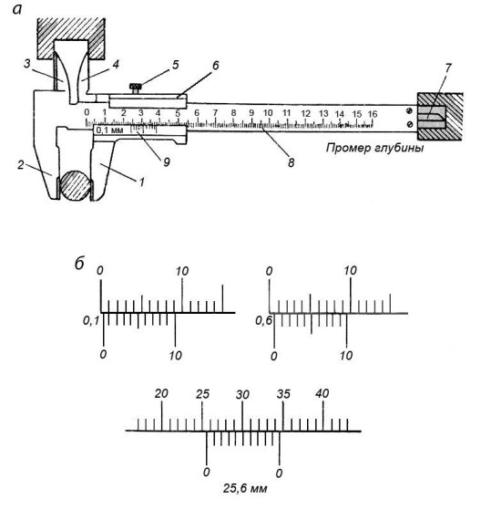
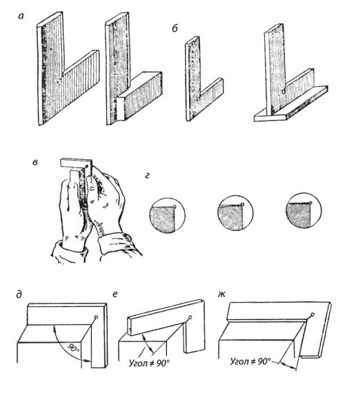
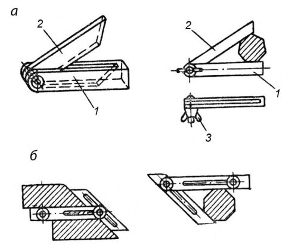
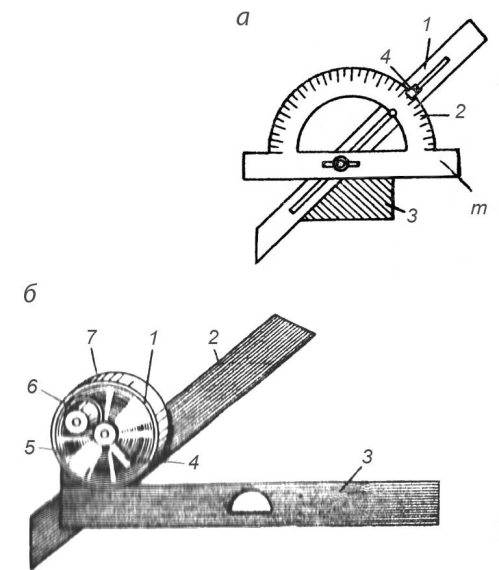
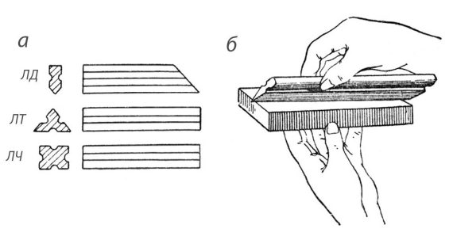

Контрольно-измерительные инструменты.


Правильность необходимых размеров и формы деталей в процессе их изготовлении проверяют штриховым (шкальным) измерительным инструментом, а также поверочными линейками, плитами и пр.
Поэтому, кроме типового набора рабочего инструмента, слесарь должен иметь контрольноизмерительные инструменты. К ним относятся: масштабная линейка, рулетка, кронциркуль и нутромер, штангенциркуль, угольник, малка, транспортир, угломер, поверочная линейка и т. п.
Масштабная линейка имеет штрихи-деления, расположенные друг от друга на расстоянии 1 мм, 0,5 мм и иногда 0,25 мм. Эти деления и составляют измерительную шкалу линейки. Для удобства отсчета размеров каждое полусантиметровое деление шкалы отмечается удлиненным штрихом, а каждое сантиметровое – еще более удлиненным штрихом, над которым проставляется цифра, указывающая число сантиметров от начала шкалы. Масштабной линейкой производят измерения наружных и внутренних размеров и расстояний с точностью до 0,5 мм, а при наличии опыта – и до 0,25 мм. Масштабные линейки изготовляют жесткими или упругими с длиной шкалы в 100, 150, 200, 300, 500, 750 и 1000 мм, шириной 10–25 мм и толщиной 0,3–1,5 мм из углеродистой инструментальной стали марок У7 или У8.

Приемы измерения масштабной линейкой показаны на рис. 9.
Рис. 9. Масштабные металлические линейки и приемы измерения ими
Рулетка представляет собой стальную ленту, на поверхности которой нанесена шкала с ценой деления 1 мм (рис. 10). Лента заключена в футляр и втягивается в него либо пружиной (самосвертывающиеся рулетки), либо вращением рукоятки (простые рулетки), либо вдвигается вручную (желобчатые рулетки). Самосвертывающиеся и желобчатые рулетки изготовляются с длиной шкалы 1 и 2 м, а простые – с длиной шкалы 2, 5, 10, 20, 30 и 50 м. Рулетки применяются для измерения линейных размеров: длины, ширины, высоты деталей и расстояний между их отдельными частями, а также длин дуг, окружностей и кривых. Измеряя окружность цилиндра, вокруг него плотно обертывают стальную ленту рулетки. При этом деление шкалы, совпадающее с нулевым делением, указывает нам длину измеряемой окружности. Такими приемами пользуются обычно при необходимости определить длину развертки или диаметр большого цилиндра, если непосредственное измерение его затруднено.

Рис. 10. Рулетки:
а – кнопочная самосвертывающаяся, б – простая, в – желобчатая, вдвигающаяся вручную
Для переноса размеров на масштабную линейку и контроля размеров деталей в процессе их изготовления пользуются кронциркулем и нутромером.
Кронциркуль применяется для измерения наружных размеров деталей: диаметров, длин, толщин буртиков, стенок и т. п. Он состоит из двух изогнутых по большому радиусу ножек длиной 150–200 мм, соединенных шарниром (рис. 11, а). При измерении кронциркуль берут правой рукой за шарнир и раздвигают его ножки так, чтобы их концы касались проверяемой детали и перемещались по ней с небольшим усилием. Размер детали определяют наложением ножек кронциркуля на масштабную линейку.
Более удобным является пружинный кронциркуль (рис. 11, б), ножки такого кронциркуля под давлением кольцевой пружины стремятся разойтись, но гайка 2, навернутая на стяжной винт 3, укрепленный на одной ножке и свободно проходящий сквозь другую, препятствует этому. Вращением гайки 2 по винту 3 с мелкой резьбой устанавливают ножки на размер, который не может измениться произвольно. Точность измерения кронциркулем 0,25 – 0,5 мм.

Рис. 11. Кронциркуль и нутромер. Способы измерения
Изготовляют его из углеродистой инструментальной стали У7 или У8, а измерительные концы на длине 15–20 мм закаливают.
Нутромер служит для измерения внутренних размеров: диаметром отверстий, размеров пазов, выточек и т. п. На рис. 11, а, б показаны обыкновенный и пружинный нутромеры. В отличие от кронциркуля он имеет прямые ножки с отогнутыми губками. Устройство нутромера аналогично устройству кронциркуля.
При измерении диаметра отверстия ножки нутромера разводят до легкого касания со стенками детали и затем вводят в отверстие отвесно. Замеренный размер отверстия будет соответствовать действительному только в том случае, когда нутромер не будет перекошен, т. е. линия, проходящая через концы ножек, будет перпендикулярной оси отверстия. Отсчет размера производится по измерительной линейке; при этом одну ножку нутромера упирают и плоскость, к которой под прямым углом прижата торцовая грань измерительной линейки, и производят по ней отсчет размера (рис. 11, в). На рис. 11, г показано измерение развода ножек нутромера при помощи штангенциркуля. При этом обеспечивается большая точность (до ±0,1 мм), чем при отсчете по линейке.
Изготовляют нутромеры из углеродистой инструментальной стали У7 или У8 с закалкой измерительных концов на длине 15–20 мм.
Точность измерений, которую можно получить с помощью масштабной линейки, складного метра или рулетки, далеко не всегда удовлетворяет требованиям современного машиностроения. Поэтому при изготовлении ответственных деталей машин пользуются более совершенными масштабными инструментами, позволяющими определять размеры с повышенной точностью. К таким инструментам в первую очередь относится штангенциркуль.
Штангенциркуль применяется для измерений как наружных, так и внутренних размеров деталей (рис. 12, а). Он состоит из штанги 8 и двух пар губок: нижних 1 и 2 и верхних 3 и 4. Губки 1 и 4 изготовлены заодно с рамкой 6, скользящей по штанге. С помощью винта 5 рамка может быть закреплена в требуемом положении на штанге. Нижние губки служат для измерений наружных размеров, а верхние – для внутренних измерений. Глубиномер 7 соединен с подвижной рамкой 6, передвигается по пазу штанги 8 и служит для измерения глубины отверстий, пазов, выточек и др. Отсчет целых миллиметров производится по шкале штанги, а отсчет долей миллиметра – по шкале нониуса 9, помещенной в вырезе рамки 6 штангенциркуля.
Шкала нониуса имеет десять равных делений на длине 9 мм; таким образом, каждое деление шкалы нониуса меньше деления масштаба (линейки) на 0,1 мм. При измерении детали штангенциркулем сначала отсчитывают по шкале целое число миллиметров на штанге, отыскивая его под первым штрихом нониуса, а затем с помощью нониуса определяют десятые доли миллиметра. При этом намечают деление нониуса, совпадающее с делением на штанге. Порядковое число этого деления показывает десятые доли миллиметра, которые прибавляют к целому числу миллиметров. На рис. 12, б изображены три положения нониуса относительно шкалы штанги, соответствующие размерам: 0,1; 0,5 и 25,6 мм.

Рис. 12. Штангенциркуль с точностью измерения 0,1 мм
Зачастую приходится изготовлять детали, поверхности которых сопрягаются под различными углами. Для измерения этих углов пользуются угольниками, малками, угломерами и др. Угольники и малки являются наиболее распространенным инструментом для проверки прямых углов. Стальные угольники с углом в 90 ° бывают различных размеров, цельные или составные (рис. 13).
Угольники изготовляют четырех классов точности: 0, 1, 2 и 3. Наиболее точные угольники класса 0. Точные угольники с фасками называются лекальными (рис. 13, а, б). Для проверки прямых углов угольник накладывают на проверяемую деталь и определяют правильность обработки проверяемого угла на просвет. При проверке наружного угла угольник накладывают на деталь его внутренней частью (рис. 13, в), а при проверке внутреннего угла – наружной частью. Наложив угольник одной стороной на обработанную сторону детали, слегка прижимая его, совмещают другую сторону угольника с обрабатываемой стороной детали и по образовавшемуся просвету судят о точности выполнения прямого угла (рис. 13, г). Иногда размер просвета определяют с помощью щупов. Необходимо следить за тем, чтобы угольник устанавливался в плоскости, перпендикулярной к линии пересечения плоскостей, образующих прямой угол (рис. 13, д). При наклонных положениях угольника (рис. 13, е, ж) возможны ошибки замеров.

Рис. 13. Угольники с углом 90° и способы их применения
Простая малка (рис. 14, а) состоит из обоймы 1 и линейки 2, закрепленной шарнирно между двумя планками обоймы. Шарнирное крепление обоймы позволяет линейке занимать по отношению к обойме положение под любым углом. Малку устанавливают на требуемый угол по образцу детали или по угловым плиткам. Требуемый угол фиксируется винтом 3 с барашковой гайкой.
Простая малка служит для измерения (переноса) одновременно только одного угла.
Универсальная малка служит для одновременного переноса двух или трех углов.
Для измерения или разметки углов, для настройки малок или определения величины перенесенных ими углов пользуются угломерными инструментами с независимым углом. К таким инструментам относятся транспортиры и угломеры. Транспортиры обычно применяются для измерения и разметки углов на плоскости. Угломеры бывают простые и универсальные.

Рис. 14. Простая малка и способы ее применения
Простой угломер состоит из линейки 1 и транспортира 2 (рис. 15, а). При измерениях угломер накладывают на деталь так, чтобы линейка 1 и нижний обрез m полки транспортира 2 совпадали со сторонами измеряемой детали 3. Величину угла определяют по указателю 4, перемещающемуся по шкале транспортира вместе с линейкой. Простым угломером можно измерять величину углов с точностью 0,5–1°.

Рис. 15. Угломеры: а – простой, б – оптический
Оптический угломер состоит из корпуса 1 (рис. 15, б), в котором закреплен стеклянный диск со шкалой, имеющей деления в градусах и минутах.
Цена малых делений 10 '. С корпусом жестко скреплена основная (неподвижная) линейка 3. На диске 5 смонтирована лупа 6, рычаг 4 и укреплена подвижная линейка 2. Под лупой параллельно стеклянному диску расположена небольшая стеклянная пластинка, на которой нанесен указатель, ясно видимый через окуляр лупы. Линейку 2 можно перемещать в продольном направлении и с помощью рычага 4 закреплять в нужном положении. Во время поворота линейки 2 в ту или другую сторону будут вращаться в том же направлении диск 5 и лупа 6. Таким образом, определенному положению линейки будет соответствовать вполне определенное положение диска и лупы. После того, как они будут закреплены зажимным кольцом 7, наблюдая через лупу 6, производят отсчет показаний угломера.
Оптическим угломером можно измерять углы от 0 до 180 °. Допускаемые погрешности показания оптического угломера ±5 '.
Поверочные линейки служат для проверки плоскостей на прямолинейность. В процессе обработки плоскостей чаще всего пользуются лекальными линейками. Они подразделяются на линейки лекальные с двусторонним скосом, трехгранные и четырехгранные (рис. 16, а).

Рис. 16. Лекальные линейки: а – конструктивные формы линеек: двухсторонняя, трехгранная, четырехгранная, б – прием наложения линейки
Лекальные линейки изготовляются с высокой точностью и имеют тонкие ребра с радиусом закругления 0,1–0,2 мм, благодаря чему можно весьма точно определить отклонение от прямолинейности по способу световой щели (на просвет). Для этого линейка своим ребром устанавливается на проверяемую поверхность детали против света (рис. 16, б). Имеющиеся отклонения от прямолинейности будут при этом заметны между линейкой и поверхностью детали. При хорошем освещении можно обнаружить отклонение от прямолинейности величиной до 0,005—0,002 мм. Лекальные линейки изготовляются длиной от 25 до 500 мм из углеродистой инструментальной или легированной стали с последующей закалкой.
Хранение измерительного инструмента и уход за ним. Точность и долговечность инструмента зависят не только от качества изготовления и умелого обращения, но также от правильного хранения и ухода за ним.
Простейший измерительный инструмент хранится обычно в ящике верстака, где его располагают в определенном порядке по типам инструмента и размерам. Штангенциркули и лекальные линейки хранятся в специальных футлярах с закрывающимися крышками. Для предохранения инструментов от ржавчины их смазывают тонким слоем чистого технического вазелина, предварительно хорошо протерев сухой тряпкой. Перед употреблением инструмента смазка удаляется чистой тряпкой или промыванием в бензине. При появлении пятен ржавчины на инструменте его необходимо положить на сутки в керосин, после чего промыть бензином, насухо протереть и снова смазать.